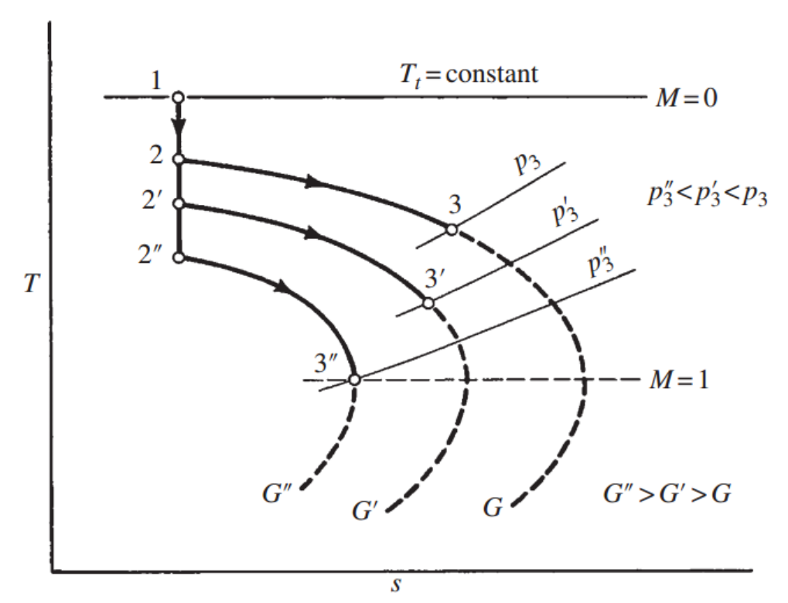

[Gas Dynamics] Ch 9 Fanno Flow - part 2 - with shock
Part 1에서는 Friction 이 존재하는
Fanno flow
에 대해서 알아보았다.
신기하게 같은 Fanno line(
ρV = 일정) 에 있는
State들은 같은 목적지 ( reference point)를
향해 흐른다.
그 이유는 * 에서 s가 최대이므로,
s가 증가하는 흐름이기 때문
뿐만아니라 그 지점에서
M = 1 이었다.
이전 Ch5 Area change flow를 배운후
Area change + Normal shock인 상황을 해석해보았다.
이제는 방금 전에 배운 Fanno flow에서
Normal shock이 발생하는 경우를 살펴보자.
Normal shock이 생기면
Super sonic -> subsonic이지만,
앞뒤
mass flow rate 일정
Momentum 일정
Stangation enthalpy 일정
하였다.
Fanno flow 에서는 마찰력으로
모멘텀이 감소하지만, 밑 그래프를 보면,
모멘텀이 동일한 또다른 Ma 가 존재한다.
그렇다면 Supersonic -> Subsonic으로
Normal shock이 생겨 jump할 수 있지 않을까??
![[Gas Dynamics] Ch 9 Fanno Flow - part 2 - with shock](./images/img-001.png)
모멘텀일정, Mass flow rate 일정, Stagnatino Enthalpy일정하므로
Normal shock Condition 과 동일.
실제 Pipe에서 마찰이 있는 Fanno flow안에 Normal shock이 일어난다면
밑의 사진과 같을 것이다.
![[Gas Dynamics] Ch 9 Fanno Flow - part 2 - with shock](./images/img-002.png)
이를 h-s graph에 plot한다면
2->3(Supersonic -> subsonic but same momentum)
이렇게 normal shock을 이용해
jump 할 것이다.
![[Gas Dynamics] Ch 9 Fanno Flow - part 2 - with shock](./images/img-003.png)
Application on Nozzle
[Subsonic case]
이제 Friction 이 있는 Converging only nozzle을 생각해보자.
똑같이 Prec을 점점 줄이면서 nozzle 유동을 조절함.
![[Gas Dynamics] Ch 9 Fanno Flow - part 2 - with shock](./images/img-004.png)
처음에 P rec = P 3 에서 P''3으로 압력을 낮추면,
밑 그림과 같이, G가 큰 Fanno line으로 옮기게 된다.
그러다가 P3''인 경우 P rec = P * 즉 reference point가 된다.
M3* = 1
이때 G가 가장 크고 즉 Mass flow rate가 가장 크다.

Area change nozzle에서도 Prec을 줄이다가
어느순간 Exit 일때 M =1 이면
Mass flow rate가 일정하고
Area chocking 이라고 하였다.[ch5 review]
위의 경우도 똑같이 P3''보다 더 낮추어도
더이상 Mass flow rate는 증가하지 않고,
관 안에서의 모든 흐름은 일정하다.
따라서, 위의 경우 우리는
Friction choking
이라고 부른다.
However, But, The thing is, The point is
Area hocking과 다르게!!!!!
파이프 흐름을 변화시키고, Mass flow rate가
변하는 경우가 있다.
바로 Friction이 증가 하는 경우이다.
Friction 이 증가한다? 무슨말?
관의 길이가 늘어난 경우이다.
![[Gas Dynamics] Ch 9 Fanno Flow - part 2 - with shock](./images/img-006.png)
그 경우 Friction term이 더 커질 것이므로,
State2 기준으로
엔트로피의 변화량은 커질 것이다.
(ch2에서 총 엔트로피 = dse + dsi로 나누어졌고
dse는 reversible by heat transfer
dsi 는 irreversible case 즉 friction에 의한 엔트로피를 의미한다)
No heat transfer assumption 으로
dse = 0, ds = dsi 임을 알 수 있다.
따라서 Friction 증가 -> 엔트로피변화량 증가
밑의 그래프로 Entropy가 증가하는 경우
Mass flow rate는 감소하고 새로운 Fanno line으로 이동
하는 것을 알 수 있다.
따라서 Prec = P4인 State 4로 이동하게 된다.
![[Gas Dynamics] Ch 9 Fanno Flow - part 2 - with shock](./images/img-007.png)
[supersonic case]
supersonic의 경우는 아주 특이하게
마찰이 증가 즉 관의 길이가 늘어났을때
Mass flow rate를 감소시키지 않고도
조건들을 만족시킬 수 있다.
바로 Normal shock 이용!!!
![[Gas Dynamics] Ch 9 Fanno Flow - part 2 - with shock](./images/img-008.png)
위 예시처럼 마찰길이 = 0.356 -> 0.728로 증가 하였다고 가정해보자.
Subsonic의 경우 mass flow rate를 낮추어 위 주건을 맞추어 주었을 것이다.
하지만, Supersonic의 경우
마찰길이 0.728에 맞는 subsonic Ma = 0.550으로
Normal shock을 이용해 Ma = 2.18에서
jump 해버린다.